SonarQube & SonarLint
SonarQube Server
SonarQube is an open source platform for continuous inspection of code quality. The platform receives the source code as an input. This code can either be sent from IDE or pulled from SCM. There are SonarQube plugins for the most popular IDEs that make running code analyses much easier. Based on the input, the platform starts to apply predefined rules and check if they are fulfilled. As an analysis output, a lot of useful information and propose improvements are provided as well.
Following is instruction-set to get setup with SonarQube:
Get SonarQube Server form FOSS
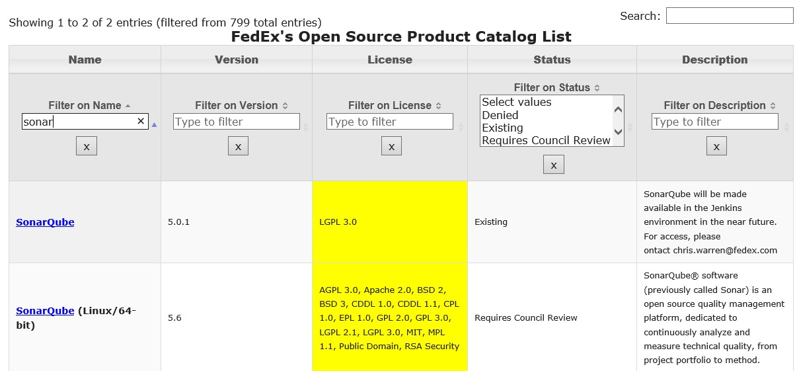
Unzip the file.
Go to /bin folder.
You would find different folders related with OS platforms.
Select the folder according to your OS platform.
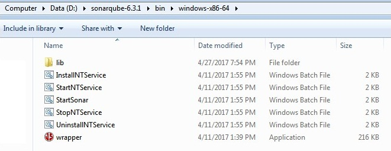
Find different batch scripts files for this system, *.bat file such as InstallNTService.bat, StartNTService.bat, StartSonar.bat etc.
Copy the path of this folder which may look like S/bin/Windows-x86-, and append it to “Path” environment variable.
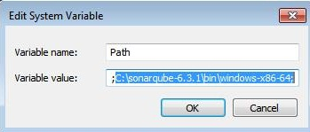
Open a command prompt, type “StartSonar” command and execute. This would start a web server at default port of 9000.
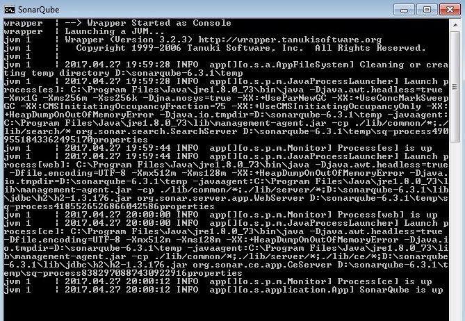
Open a web browser and access the page, http://localhost:9000. You shall see the page such as that shown in the screenshot below. This would imply that you have been able to successfully start your SonarQube server.
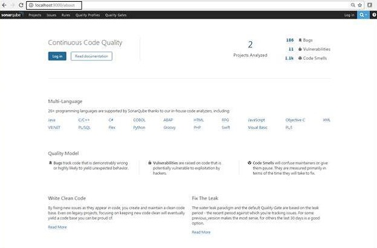
If you see the SonarQube dashboard, that would imply that you have been able to successfully start your SonarQube server.
SonarLint
SonarLint is an Eclipse plugin that provides on-the-fly feedback to developers on new bugs and quality issues injected into Java, JavaScript and PHP code.
SonarLint offers a fully-integrated user experience in Eclipse-based IDEs. After installing the plugin issues will be reported as Eclipse markers.
Note that it requires Java 8 to run.
Follow the instruction to setup Sonarlint with Eclipse Plugin
Get SonarLint plugin from FOSS, if it is not available then download it from Eclipse Market place
Click on Help-> Install new software. As shown below
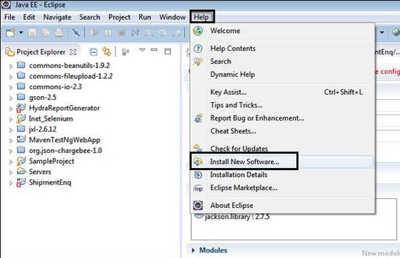
Add the path where Sonarlint plugin setup is downloaded. As shown below.
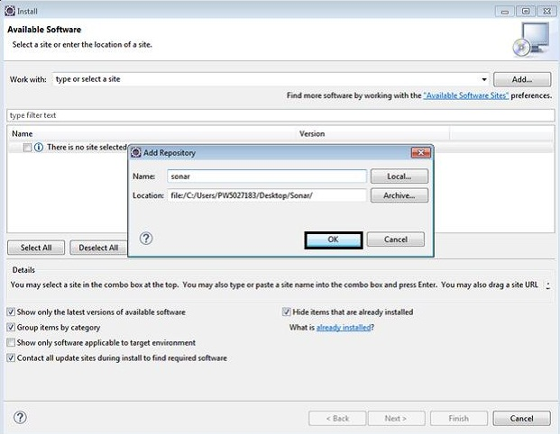
Click on select All and click on next
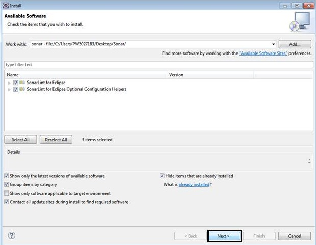
Select “I accept” radio button.
And click on Finish. As shown below
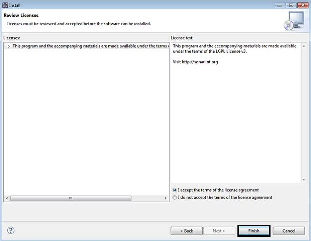
Connect to SonarQube Server in Eclipse
First step is to connect to your SonarQube server:
Open SonarQube server view, In SonarQube server view, right click and choose New -> SonarLint -> SonarQube Servers. As shown below
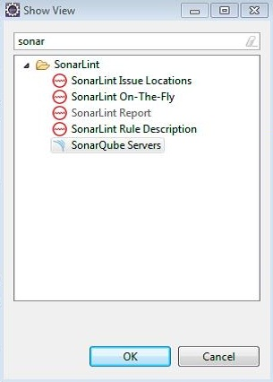
Complete connection details (URL and credentials).
Make sure that SonarQube server is up.
Test connection
Click "Finish" to close the wizard and start updating configuration from the server
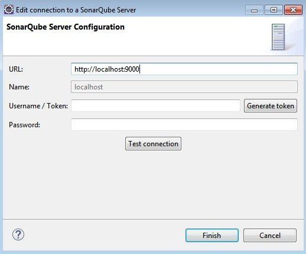
You can manage your SonarQube server connections in the "SonarQube Servers" view. To manually trigger an update of local configuration (if remote SonarQube configuration has changed): right click on a server and use the "update" action as shown below.
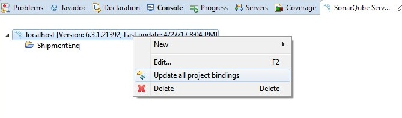
Now you can bind one or more Eclipse project(s) to their remote SonarQube pair. Right click on project -> "SonarLint -> Bind with remote SonarQube server..."
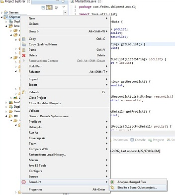
Select the project that you want to bind and click on finish button.
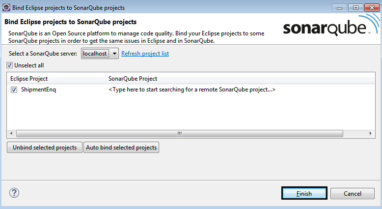
Sonar Analyzer and Sonar Reports
Analyze source code using SonarLint
Right Click on selected project >Sonarlint > Analyze
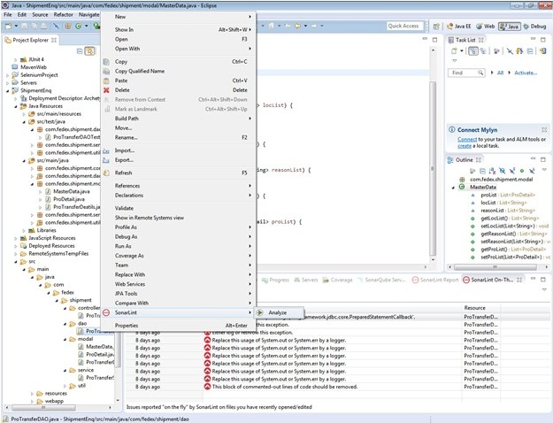
You will see the below console in eclipse.
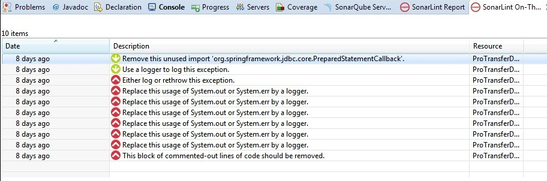
In order to see the sonar report browse : http://localhost:9000/dashboard?id=my%3Ashipment
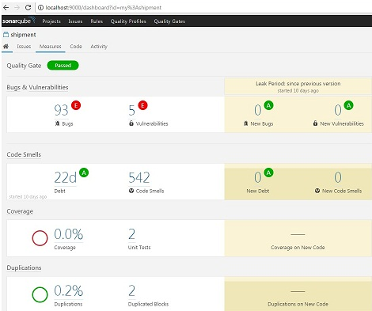
| |